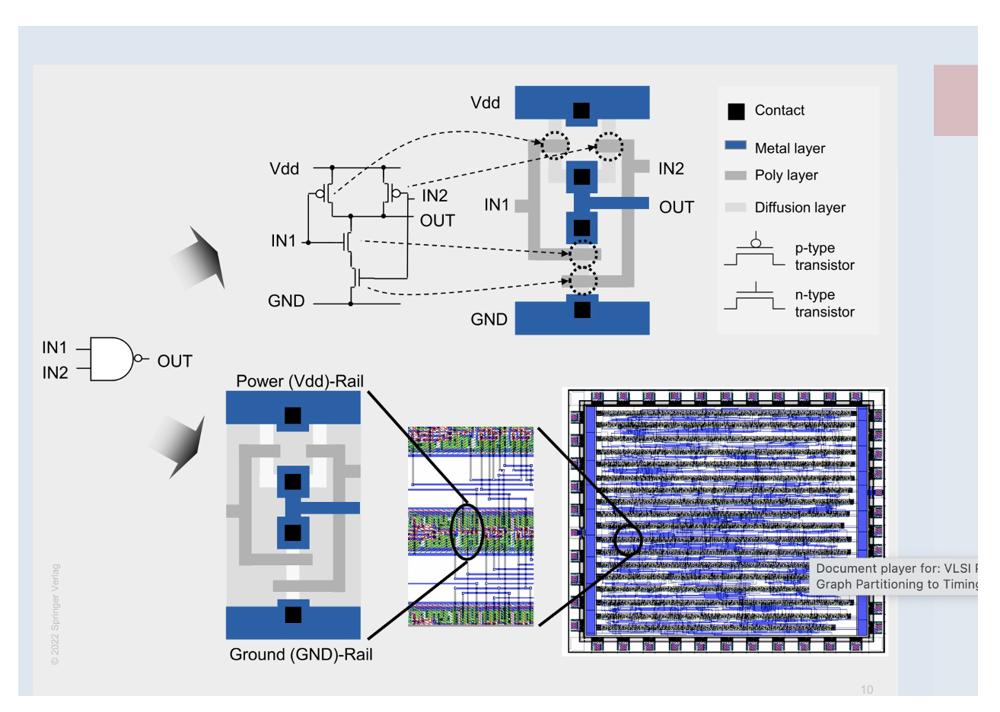
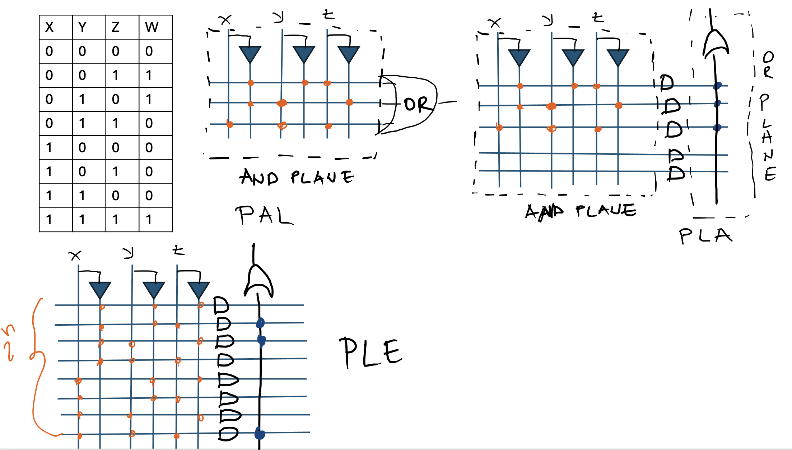
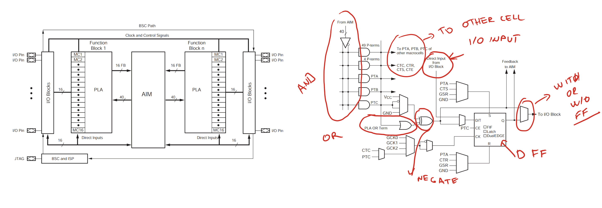

2 Basics of Digital Integrated Circuits
Basics of Digital Integrated Circuits
2.1 Goal for this week
- Classify integrated circuits by fabrication technology (bipolar, MOS/CMOS, BiCMOS) and by scale of integration, and see why Moore’s law is the reason those scales keep climbing
- Separate the IC business models: standard parts built for nobody in particular, full-custom ASICs built for one customer, and the semi-custom middle ground
- See how standard cells, macrocells, and gate arrays let an ASIC designer reuse pre-built blocks instead of hand-laying every transistor
- Meet the predecessors to the FPGA: SPLDs (PAL, PLA, PLE) and CPLDs, and the handful of underlying technologies a chip can use to store its configuration
2.2 Digital integrated circuits
A digital integrated circuit (IC) is, in simple terms, a miniature, low-cost circuit made of active and passive elements, all fabricated together on a single silicon die. We can classify ICs by the transistor technology they are built from: bipolar junction transistors (BJT), unipolar MOS or CMOS transistors like the ones we met in the previous chapter, or a mix of both, called BiCMOS.
Bipolar junction transistors have real advantages over CMOS. They switch at higher frequencies, offer better gain, and can drive higher output currents. CMOS wins anyway for almost all digital design, because a BJT’s static power consumption is never quite zero, and BJTs are larger and slower to fabricate at a given density. That is exactly the low-static-power, high-density tradeoff that made CMOS the default technology in the previous chapter.
2.2.1 Scale of integration
We also classify ICs by their scale of integration, a rough measure of how many basic elements, transistors or gates, fit on one chip. Small scale integration (SSI) covers up to about 100 elements, medium scale (MSI) 100 to 1,000, large scale (LSI) 1,000 to 10,000, very large scale (VLSI) 10,000 to 100,000, and ultra large scale (ULSI) 100,000 to 1,000,000. Beyond that, wafer-scale integration treats an entire silicon wafer as a single circuit rather than cutting it into individual dies.
This progression is not just a naming exercise. Gordon Moore observed in 1965 that the number of transistors we can fit on a chip roughly doubles every two years, a trend we now call Moore’s law. It is the reason the scale of integration climbed from a handful of gates per chip in the 1960s to transistor counts in the billions today, and it is the main force behind nearly every capability we take for granted in modern digital design.
2.3 Design methodologies
We can also classify digital ICs by who they are designed for, which we call their design methodology: standard ICs (SIC), application-specific ICs (ASIC), and standard ASICs (SASIC).
2.3.1 Standard integrated circuits
A standard IC is designed for an unknown customer. Whoever eventually buys the chip has no influence on how it was designed, and that is exactly what lets it be mass-produced and sold cheaply.
The earliest standard ICs were simple, fixed-function parts, and building any larger system out of them meant wiring together many of them on a board to form whatever circuit was needed. Software-programmable standard parts changed that, above all the CPU: the same piece of hardware adapts to a new task just by changing the program it runs, instead of changing its wiring. That flexibility is not free. A general-purpose CPU is rarely the most efficient way to run any one specific task, a tradeoff we look at more closely when we get to FPGAs later in this book.
2.3.2 Application-specific integrated circuits
An application-specific integrated circuit (ASIC) is designed for one specific application or field, rather than for an unknown general-purpose market. We build ASICs in two ways: full-custom and semi-custom.
2.3.2.1 Full-custom design
A full-custom design is built specifically for one customer, with every mask layer needed to fabricate the chip designed to order for that customer’s exact need, whether that is a systolic array, genome analysis hardware, or a dedicated accelerator. The design itself is typically strongly confidential. Since the design cost is comparable to a standard IC’s but spread over a far smaller production run, full-custom chips carry a high price per unit.
2.3.2.2 Semi-custom design
Semi-custom design starts from a predesigned or preprocessed chip. Only certain mask layers get adapted to the customer’s needs, while the rest stay identical across every customer who buys that base design. The manufacturer keeps a library of pre-tested modules on hand and connects them to fit each customer’s requirements, rather than designing from scratch every time. Because the same base design is reused across many customers, semi-custom chips are much cheaper per unit than full-custom ones.
2.3.3 Building blocks for ASIC design

Semi-custom and standard-cell ASIC design rests on a few kinds of reusable building block.
Standard cells are small, universal blocks, logic gates, flip-flops, multiplexers, and the like, each with a predefined layout and electrical behavior. The figure above shows a two-input NAND gate as a standard cell: its transistor schematic, its layout in metal, polysilicon, and diffusion layers, and the fixed-height block that results, ready to sit in a row next to other cells. Every standard cell in a library shares that same row height, which is what lets thousands of them be tiled into rows and wired together with routing that runs above the cells, so-called over-the-cell routing. A chip’s entire library of standard cells, together with the data needed to use them, is called a process design kit (PDK).
Macrocells and megacells are a step up from standard cells: larger, pre-laid-out blocks such as adders, multipliers, registers, or even whole microprocessors. The difference between the two is who they were designed for. A megacell is designed without knowledge of the specific application that will use it, which makes it broadly reusable, while a macrocell is designed to order for one customer’s needs.
Gate arrays take a different approach. Their basic elements, individual gates or groups of unconnected transistors, are pre-fabricated across the whole die before any customer design is known. Implementing a specific design on a gate array is then purely a metal-wiring problem: connect the gates that are already there in whatever pattern the design needs. Early gate arrays separated these blocks with dedicated routing channels. Later “sea of gates” designs packed transistors edge to edge instead and used higher-level metal layers for routing, improving density, with connections made by shorting or bridging transistors that would otherwise stay unconnected.
2.4 Standard ASICs (SASIC)
A standard ASIC (SASIC), also called a configurable ASIC, is manufactured generically, the same way a standard IC is, and only afterward configured to behave like a custom one. What changes from one application to the next is not the silicon itself. It is a set of configuration bits, held in one of a handful of underlying technologies.
2.4.1 Configuration technologies
Static memory is the technology we will see the most of later in this book. Configuration bits live in SRAM cells and drive electronic switches (transmission gates, tri-state buffers, pass transistors) on or off. It is fast and fully reconfigurable, at the cost of being volatile. This is the same idea behind the configuration SRAM inside every FPGA we meet later in this book.
UV-erasable memory stores its configuration differently. Its key element is a MOSFET with a second gate, electrically isolated and sandwiched between the control gate and the substrate, called a floating gate. A strong lateral field between drain and source injects electrons onto that floating gate, and because it has no conductive path to leak through, those electrons stay trapped once the field is removed, even with power off. Erasing the device means shining UV light on it, energetic enough to let the trapped electrons escape.
Electrically erasable memory keeps the same floating-gate mechanism, but the device is built so the trapped charge can be removed electrically instead, without needing a UV lamp.
Fuse and antifuse technologies work differently again, and only in one direction. A fuse is a narrow bridge of conducting material that blows open when a programming current is forced through it. An antifuse is the opposite: a thin dielectric separating two conductive layers, which ruptures under a programming voltage and creates a permanent short between them. Either way, programming a fuse-based device is a one-time, permanent decision, unlike the other three technologies, which can all be reconfigured.
2.4.2 Simple programmable logic devices

Simple programmable logic devices (SPLDs) are the direct ancestors of the FPGA, and the simplest configurable logic devices we will meet. Internally, an SPLD is built from one or two programmable logic planes, an AND plane and an OR plane, that implement a digital function exactly the way we would write it out by hand: as a sum of products. Every input, and its inverted value, runs as a vertical line through the AND plane, and every horizontal line represents one product term. Which vertical lines feed which horizontal line, and which product terms feed which output, is exactly what gets configured.
Which of the two planes is configurable, and which is fixed, gives us three SPLD variants. In a PAL (Programmable Array Logic) device, the AND plane is configurable but the OR plane is fixed. In a PLA (Programmable Logic Array), both planes are configurable, at the cost of more configuration bits and a larger device. In a PLE (Programmable Logic Element), the AND plane is fixed and already generates every possible product term, all \(2^n\) of them for \(n\) inputs, and only the OR plane, choosing which of those terms feed each output, is configurable.
2.4.3 Complex programmable logic devices

A complex programmable logic device (CPLD) is, at its core, many SPLDs packaged on one chip and tied together with a programmable interconnect, trading a single SPLD’s limited capacity for a much larger, still fairly predictable, device.
Take the Xilinx CoolRunner-II as a concrete example. Its I/O blocks connect the chip to the outside world, the same role they play in the FPGAs we meet later in this book. Thirty-two identical function blocks hold the actual logic, and an Advanced Interconnect Matrix (AIM) wires the function blocks to each other and to the I/O blocks, playing the same role the FPGA’s routing plane plays later.
Each function block looks like a small PAL: 56 AND product terms feeding 16 OR sum outputs. Beyond that core, each output can pass through an XOR stage, useful for controlled inversion or parity-style logic, and into a flip-flop resource configurable as a D flip-flop, a level-sensitive latch, or a toggle (T) flip-flop. An output mux then picks whether the macrocell’s output is the raw combinational result or the registered one, the same combinational-versus-registered choice the FPGA’s CLB output mux makes.
Tiling many PAL-like blocks together through the AIM lets a CPLD implement far larger combinational and sequential designs than a single SPLD could, with timing that stays more predictable, and I/O that responds faster, than the larger and more routing-heavy FPGAs we look at later in this book.